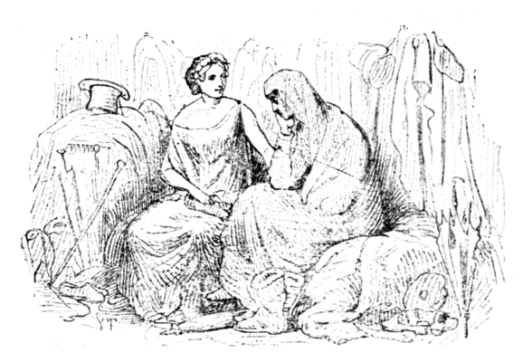
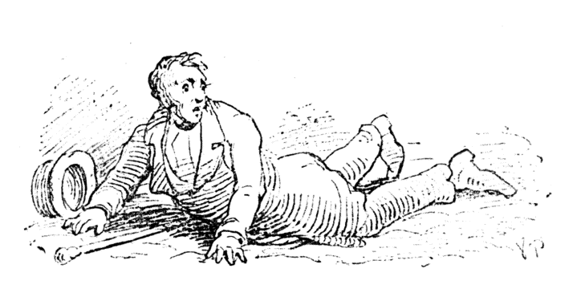
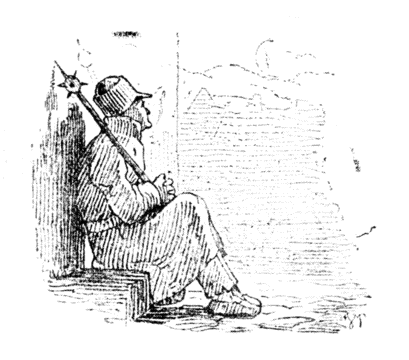
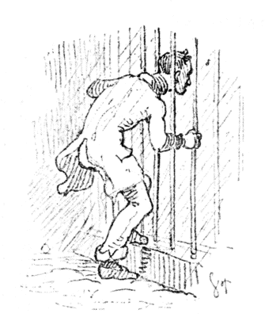
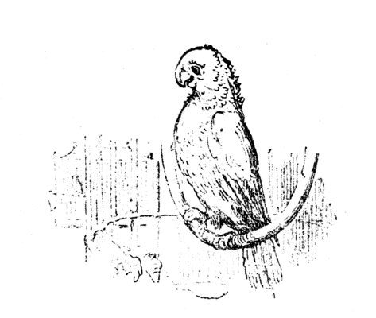
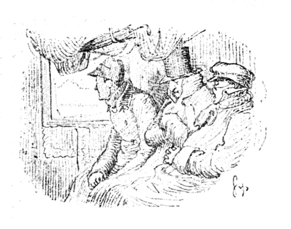
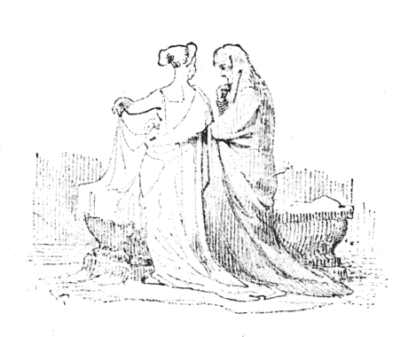

一 お話のはじまり

コペンハーゲンで、そこの東通の、王立新市場からとおくない一軒の家は、たいそうおおぜいのお客でにぎわっていました。人と人とのおつきあいでは、ときおりこちらからお客をしておけば、そのうち、こちらもお客によばれるといったものでしてね。お客の半分はとうにカルタ
「さあ、こんどはなにがはじまりしましょうね。」というごあいさつが、どんな結果になってあらわれるかと、手ぐすねひいて、待っているのです。もうずいぶんお客さま同士の話がはずむだけはずんでいました。そういう話のなかには、中世紀時代の話もでました。あるひとりは、あの時代は今の時代にくらべては、くらべものにならないほどよかったと主張しました。じっさい
＊デンマルクの名高い物理学者（一七七七―一八五一）。
＊＊ヨハン二世（一四八一―一五一三）。選挙侯エルンスト・フォン・ザクセンのむすめクリスティーネと婚。ノルウェイ・スエーデン王を兼ねた。
さて会話は、こんなことで、＊＊ヨハン二世（一四八一―一五一三）。選挙侯エルンスト・フォン・ザクセンのむすめクリスティーネと婚。ノルウェイ・スエーデン王を兼ねた。
ふたりはおたがいに、きょうどこでなにをして来たか話し合っていました。幸福の女神のおそばづかえのそのまた召使は、ほんのふたつ三つごくつまらないことをして来ました。たとえば買い立ての帽子が夕立にあうところを助けてやったり、ある正直な男に無名の
「まあついでだからいいますがね。」と、幸福のおそばづかえのそのまた召使は話しました。「きょうはわたしの
こういうと心配の
「いや、お待ちなさいよ。そのうわおいぐつをはいた人は、きっとずいぶんふしあわせになるでしょうよ。そしてまた、はやくそれをぬぎたいとあせるようになるでしょうよ。」といいました。
「まあそこまではおもわなくても。」と、もうひとりがふふくらしくいいました。「さあ、それでは幸福のうわおいぐつを、ここの戸口におきますよ。だれかがまちがってひっかけていって、いやでも、すぐと幸福な人間になるでしょう。」
どうです。これがふたりの女の話でした。
［＃改ページ］
二 参事官はどうしたか

もうだいぶ夜がふけていました。
「やれやれ、これはえらいぞ、いやはや、なんというきたない町だ。」と参事官がいいました。「どうして歩道をみんな、なくしてしまったのだろう。
月はまだそう高くはのぼっていませんでしたし、おまけに空気はかなり重たくて、なんということなしに、そこらの物がくらやみのなかへとろけ出しているようにおもわれました。次の横町の
「これはきっと美術品を売る家なのだな。日がくれたのに看板をひっこめるを忘れているのだ。」と、参事官はおもいました。
むかしの服装をした人がふたり、すぐそばを通っていきました。
「おや、なんというふうをしているのだ。
ふとだしぬけに、太皷と笛の
「シェランの大
「大僧正のおもいつきだと、とんでもないことだ。」と、参事官はため息をついてあたまを振りました。そんな大僧正なんてあるものか。ひとりで不服をとなえながら、右も左もみかえらずに、参事官はずんずん東通をとおりぬけて、
「
「
「わたしは、クリスティアンス ハウンから小市場通へいくのだよ。」
こういうと、こんどはむこうがおどろいて顔をみました。
「ぜんたい橋はどこになっているのだ。」と参事官はいいました。「第一ここにあかりをつけておかないなんてけしからんじゃないか。それにこのへんはまるで沼の中をあるくようなひどいぬかるみだな。」
こんなふうに話しても、話せば話すほど船頭にはよけいわからなくなりました。
「どうもおまえたちの＊ボルンホルムことばは、さっぱりわからんぞ。」と、参事官はかんしゃくをおこしてどなりつけました。そして背中をむけてどんどんあるきだしました。
＊バルティック海上の島。島の方言がかわっていた。
しかしいくらあるいても、参事は橋をみつけることはできませんでした。らんかんらしいものはまるでありませんでした。「どうもこのへんは実にひどい所だ。」と、参事官はいいました。じぶんのいる時代を、この晩ほどなさけなくおもったことはありませんでした。「まあこのぶんでは、辻馬車をやとうのがいちばんよさそうだ。」と、参事官はおもいました。そういったところで、さて、どこにその辻馬車があるでしょうか。それは一台だってみあたりそうにはありませんでした。
「これではやはり、王立新市場までもどるほうがいいだろう。あそこならたくさん馬車も来ているだろう。そうでもしないと、とてもクリスティアンス ハウンまでかえることなどできそうもない。」
そこで、またもどって、東通のほうへあるきだしました。そしてほとんどそこを通りぬけようとしたときに、たかだかと月がのぼりました。
「おや、なんとおもって足場みたいなものをここに建てたのだ。」
東門をみつけて、参事官はこうさけびました。そのころ東通のはずれに、門があったのです。
とにかく、出口をさがして、そこをとおりぬけると、今の王立新市場のある通へでました。けれどそれはただのだだっ広い草原でした。二三軒みすぼらしいオランダ船の船員のとまる下宿の
「おれはしんきろうをみているのか知らん。それとも酔っぱらっているのじゃないか知ら。」と、参事は泣き声をだしました。「とにかくありゃあなんだ。」
もうどうしても、病気にかかっているにちがいない、そうおもい込んで、また引っかえしました。往来をとぼとぼあるきあるき、なおよくそこらの家のようすをみると、たいていの家は木組の小屋で、なかにはわら屋根の家もありました。
「いや、どうもへんな気分でしょうがない。」と、参事官はため息をつきました。「しかしおれは、ほんの一杯ポンスを飲んだだけだが、それがうまくおさまらないとみえる。それに、時候はずれのむしざけをだしたりなんかして、まったくくいあわせがわるかった。もういちどもどっていって、主人の代理公使夫人に
そういいながら、その家の方角をさがしましたが、どうしてもみつかりませんでした。
「どうもひどいことだ。東通がまるでわからなくなった。一軒の店もみえはしない。みすぼらしいたおれかけの小屋がみえるだけだ。これではまるでリョースキレか、リンステッドへでもいったようだ。ああ、おれは病気だぞ。遠慮をしているところでない。だが、いったい代理公使の家はどこなんだろう。どうしてももうもととはちがっている。しかもなかには人がまだ起きている。――どうしてもおれは病気だ。」
そのとき参事官は、一軒戸のあいている家の前へ出ました。すきまからあかりが往来へさしていました。これはそのころの安宿で、半分居酒屋のようなものでした。ところで、そのなかはホルシュタイン風の百姓家の台所といったていさいでした。なかにはおおぜいの人間が、船乗や、コペンハーゲンの町人や二三人の
参事官はお客をむかえにたったおかみさんにいいました。「お気のどくですが、わたしは非常にぐあいがわるいのです。クリスティアンスハウンまで、辻馬車をやとってはもらえませんか。」
おかみさんは、参事官の顔をうさんらしくみて首をふりました。それからドイツ語で話しかけました。参事官はそれで、おかみさんがデンマルク語を知らないことがわかったので、こんどはドイツ語で同じ註文をくり返しました。その言葉と服装から、おかみさんは、この客をてっきり外国人だとおもい込みました。で、気分のわるそうなようすをみると、さっそく水をジョッキに一杯ついでもって来ました。水はなんだかしょっぱいへんな味がしました。そのくせ外の
参事官は両手であたまをおさえて、ふかいためいきをつきながら、いまし方つづいておこった奇妙なことを、あれこれとおもいめぐらしていました。
「それはきょうの＊『ダーエン』ですか。」と、参事官は、おかみさんがもっていきかけた大きな紙をみて、ほんのおせじにききました。
＊コペンハーゲン発行の夕刊新聞。一八〇五―四三。
お上さんは、なにを客がいうのだかわかりませんでしたから、だまってその紙を渡しました。それはむかし、キョルンの町にあらわれたふしぎな空中「こりゃなかなか古い。」と参事官は、あんがいな掘り出しもので、おおきに愉快になりました。
「おまえさん、このめずらしい
すると参事官のすぐそばにすわって、この話をきいた人たちが、びっくりしてその顔をながめました。そして、そのうちのひとりは、たち上がって、うやうやしく帽子をぬいで、ひどくしかつめらしく「先生、どうも、あなたはたいそうな学者でおいでになりますな。」といいました。
「いやはや、どういたしまして。」と、参事官は答えました。「ついだれでも知っているはずのことをふたことみこと、お話しただけですよ。」
「けんそんは美徳で。」とその男はラテン語まじりにいいました。「［＃「「」は底本では欠落］もっともお説にたいして、わたくしは異説をさしはさむものであります。しかしながら、わたくしの批判はしばらく保留いたしましよう。」
「失礼ながら、あなたはどなたですか。」と、参事官がたずねました。
「わたくしは聖書得業士でして。」と、その男が答えました。
その答で参事官は十分でした。その人の称号と服装はそれによくつりあっていました。多分、これは村の老先生というやつにちがいない。よくユラン（ユットランド）地方でみかけるかわりものだと参事官はおもいました。
「ここはいかにも学者清談の郷ではありませんな。」と、その男はつづけていいだしました。「しかしどうかまげてお話しください。あなたはむろん、古書はふかくご
「はい、はい、それはな。」と、参事官は受けて、「わたしも有益な古書を読むことは大好きですが、とうせつの本もずいぶん読みます。ただ困るのは『その日、その日の話』というやつで、わざわざ本でよまないでも、毎日のことで飽き飽きしますよ。」
「［＃「「」は底本では「『」］『その日、その日の話』といいますと。」と、得業士はふしんそうにききました。
「いや、わたしのいうのは、このごろはやる新作の小説のことですよ。」
「ははあ。」と、得業士はにっこりしながら、「あれもなかなか気のきいたものでして、宮中ではずいぶん読まれていますよ。＊王様はとりわけ、アーサー王と
＊デンマルクの詩人ホルベルのデンマルク国史物語に、ハンス王が寵臣のオットー ルードとアーサー王君臣の交りについてとんち問答した話がかいてある。なお、「その日その日の物語」は、文士ハイベルの母のかきのこした身の上話。
「それはまだ読んでいません。」と、参事官はいいました。「ハイベルが出した新刊の本にちがいありませんね。」「いや、ハイベルではありません。ゴットフレト フォン ゲーメンが出したのです。」と、学士は答えました。
「へへえ、その人は作者ですか。」と、参事官がたずねました。「ゴットフレト フォン ゲーメンといえば、すいぶん古い名まえですね。あれはなんでも、ハンス王時代、デンマルクで印刷業をはじめた人ではありませんか。」
「そうですとも。この国でははじめての印刷屋さんですよ。」と、学士が答えました。
ここまではどうにかうまくいきました。こんどは町人のひとりが、三年まえ流行した伝染病の話をしだしました。ただそれは一四八四年の話でした。参事官はそれを一八三〇年代はやったコレラの話をしているのだとおもいました。そこで会話は、どうにかつじつまがあいました。一四九〇年の海賊戦争もつい近頃のことでしたから、これも話題にのぼらずにいませんでした。で、イギリスの海賊船が、やはり同じ波止場か船をりゃくだつしていった、とその男は話しました。ところで、＊一八〇一年の事件をよく知っている参事官は、進んでその話に調子をあわせて、イギリス人に攻撃をしかけました。これだけはまずよかったが、そのあとの話はそううまくばつがあいませんでした。ひとつひとつに話がくいちがいました。学士先生は気のどくなほどなにも知りませんでした。参事官のごくかるく口にしたことまでが、いかにもでたらめな、気ちがいじみた話にきこえました。そうなると、ふたりはだまって顔ばかりみあわせました。いよいよいけないとなると、学士はいくらか相手にわからせることができるかとおもって、ラテン語で話しましたけれど、いっこう役には立ちませんでした。
＊一八〇一年四月二日英艦の攻撃事件。
「あなた、ご気分はどうですね。」と、おかみさんはいって、参事官のそでをひっぱりました。ここではじめて、参事官はわれにかえりました。話でむちゅうになっているあいだは、これまでのことをいっさい忘れていたのです。
「やあ、たいへん、わたしはどこにいるのだ。」と、参事官はいって、それをおもいだしたとたん、くらくらとなったようでした。
「さあ、クラレットをやろうよ。蜜酒に、ブレーメン・ビールだ。」と、客のひとりがさけびました。
「どうです、いっしょにやりたまえ。」
ふたりの給仕のむすめがはいって来ました。そのひとりは＊［＃「＊」は底本では欠落］ふた色の染分け帽子をかぶって来ました。ふたりはお酒をついでまわって、おじぎをしました。参事官はからだじゅうぞっとさむけがするようにおもいました。
＊ハンス王時代下等な酌女のしるし。
「やあ、こりゃなんだ。こりゃなんだ。」と、参事官はさけびました。けれども、いやでもいっしょに飲まなければなりませんでした。客どもはごくたくみにこの参事官は、これまでこんな下等な乱暴ななかまにはいったことはありませんでした。
「これではまるで、デンマルクの国が、異教国の昔にかえったようだ。こんなおそろしい目にあったことははじめてだぞ。」と、参事官はおもいました。しかしそのときふとおもいついて、参事官はテーブルの下にもぐりこんで、そこから戸口の所まではい出そうとしました。そのとおりうまくやって、ちょうど出口までいったところを、ほかの者にみつけられました。みんなは参事官の足をとって引きもどしました。そのとき大仕合わせなことには、うわおおいぐつがすっぽりぬけました。――それでいっさいの魔法が消えてなくなりました。
そのとき参事官ははっきりと、すぐ目のまえに、街灯がひとつ、かんかんともっていて、そのうしろに大きな建物の立っているのをみつけました。そこらじゅうみまわしても、おなじみのあるものばかりでした。それは、今の世の中で毎日みているとおりの東通でした。参事官は玄関の戸に足をむけて腹ンばいになっていたのです。すぐむこうには町の夜番が、すわって寝込んでいました。
「やあたいへん、おれは往来で寝て、夢をみていたのか。」と、参事官はさけびました。「なるほど、これは東通だわい。どうもなにかが、かんかんあかるくって、にぎやかだな。それにしてもいっぱいのポンスのききめはじつにおそろしい。」
それから二分ののち参事官は、ゆうゆうと辻馬車のなかにすわって、クリスティアンス ハウンのじぶんの家のほうへはこばれて［＃「はこばれて」は底本では「はこぱれて」］いきました。参事官はいましがたさんざんおそろしい目や心配な目にあったことをおもいだすと、今の世の中には、それはいろいろわるいことはあっても、ついさっきもっていかれた昔の時代よりはずっとましだということをさとりました。どうですね、参事官は、もののわかったひとでしょう。
［＃改ページ］
三 夜番のぼうけん

「おやおや、あすこにうわおいぐつが一足ころがっている。」と夜番はいいました。「きっとむこうの二階にいる中尉さんの物にちがいない。すぐ門口にころがっているから。」
正直な夜番は、ベルをならして、うわおいぐつを持主にわたそうとおもいました。二階にはまだあかりがついていました。けれど、うちのなかのほかの人たちまでおどろかすのも気のどくだとおもったので、そのままにしておきました。
「だが、こういうものをはいたら、ずいぶん温かいだろうな。」と、夜番はひとりごとをいいました。「なんて上等なやわらかい革がつかってあるのだろう。」うわおいぐつはぴったり夜番の足にあいました。「どうも、世の中はおかしなものだ。いまごろ中尉さんは、あの温かい寝床のなかで横になっていればいられるはすなのだ。ところが、そうでない。へやのなかをいったり来たり、あるいている。ありゃしあわせなお人さな。おかみさんもこどももなくて、毎晩、夜会にでかけていく。おれがあの人だったらずいぶんしあわせな人間だろうな。」
夜番がこういって、こころのねがいを口にだしますと、はいていたうわおいぐつはみるみる効能をあらわして、夜番のたましいはするすると中尉のからだとこころのなかへ運んで持っていかれました。
そこで夜番は、二階のへやにはいって、ちいさなばら色の紙を指のまたにはさんで持ちました。それには詩が、中尉君自作の詩が書いてありました。それはどんな人だって、一生にいちどは心のなかを歌にうたいたい気持になるおりがあるもので、そういうとき、おもったとおりを紙に書けば［＃「書けば」は底本では「書けは」］、詩になります。そこで紙にはこう書いてありました。
「ああ、金持でありたいな。」
「ああ、金持でありたいな。」おれはたびたびそうおもった。
やっと二尺のがきのとき、おれはいろんな望をおこした。
ああ、金持でありたいな――そうして士官になろうとした、
サーベルさげて、軍服すがたに、負革 かけて。
時節がくると、おれも士官になりすました。
さてはや、いっこう金 はできない。なさけないやつ。
全能の神さま、お助けください。
ある晩、元気で浮かれていると、
ちいさい女の子がキスしてくれた、
おとぎ歌なら、持ちあわせは山ほど、
そのくせ金にはいつでも貧乏――
こどもは歌さえあればかまわぬ。
歌なら、山ほど、金には、いつもなさけないやつ。
全能の神さま、ごらんのとおり。
「ああ、金持でありたいな。」おいのりがこうきこえだす。
こどもはみるみるむすめになった、
りこうで、きれいで、心もやさしいむすめになった。
ああ、分らせたい、おれの心のうちにある――
それこそ大したおとぎ話を――むすめがやさしい心をみせりゃ。
だが金はなし、口には出せぬ。なさけないやつ。
全能の神さま、おこころしだいに。
ああ、せめてかわりに、休息と慰安 、それでもほしい。
そうすりゃなにも心の悩み、紙にかくにもあたらない。
おれの心をささげたおまえだ、わかってもくれよ。
若いおもい出つづった歌だ、読んでもくれよ。
だめだ、やっぱりこのままくらい夜 にささげてしまうがましか。
未来はやみだ、いやはやなさけないやつめ。
全能の神さま、おめぐみください。
「ああ、金持でありたいな。」おれはたびたびそうおもった。
やっと二尺のがきのとき、おれはいろんな望をおこした。
ああ、金持でありたいな――そうして士官になろうとした、
サーベルさげて、軍服すがたに、
時節がくると、おれも士官になりすました。
さてはや、いっこう
全能の神さま、お助けください。
ある晩、元気で浮かれていると、
ちいさい女の子がキスしてくれた、
おとぎ歌なら、持ちあわせは山ほど、
そのくせ金にはいつでも貧乏――
こどもは歌さえあればかまわぬ。
歌なら、山ほど、金には、いつもなさけないやつ。
全能の神さま、ごらんのとおり。
「ああ、金持でありたいな。」おいのりがこうきこえだす。
こどもはみるみるむすめになった、
りこうで、きれいで、心もやさしいむすめになった。
ああ、分らせたい、おれの心のうちにある――
それこそ大したおとぎ話を――むすめがやさしい心をみせりゃ。
だが金はなし、口には出せぬ。なさけないやつ。
全能の神さま、おこころしだいに。
ああ、せめてかわりに、休息と
そうすりゃなにも心の悩み、紙にかくにもあたらない。
おれの心をささげたおまえだ、わかってもくれよ。
若いおもい出つづった歌だ、読んでもくれよ。
だめだ、やっぱりこのままくらい
未来はやみだ、いやはやなさけないやつめ。
全能の神さま、おめぐみください。
そうです、人は恋をしているときこんな詩をつくります。でも用心ぶかい人は、そんなものを印刷したりしないものです。中尉と恋と貧乏、これが三角の形です。それとも幸福のさいころのこわれた半かけとでもいいましようか。それを中尉はつくづくおもっていました。そこで、窓わくにあたまをおしつけて、ふかいため息ばかりついていました。
「あすこの往来にねている貧しい夜番のほうが、おれよりはずっと幸福だ。あの男にはおれのおもっているような不足というものがない。家もあり、かみさんもあり、こどももあって、あの男のかなしいことには泣いてくれ、うれしいことには喜んでくれる。ああ、おれはいっそあの男と代ることができたら、今よりずっと幸福になれるのだがな。あの男はおれよりずっと幸福なのだからな。」
中尉がこうひとりごとをいうと、そのしゅんかん、夜番はまたもとの夜番になりました。なぜなら幸福のうわおいぐつのおかげで、夜番のたましいは中尉のからだを借りたのですけれど、その中尉は、夜番よりもいっそう不平家で、おれはもとの夜番になりたいとのぞんだのでした。そこで、そのおのぞみどおり、夜番はまた夜番になってしまったのです。
「いやな夢だった。」と、夜番はいいました。「が、ずいぶんばかばかしかった。おれはむこう二階の中尉さんになったようにおもったが、まるで愉快でもなんでもなかった。息のつまるほどほおずりしようとまちかまえていてくれる、かみさんやこどものいることを忘れてなるものか。」
夜番はまたすわって、こくりこくりやっていました。夢がまだはっきりはなれずにいました。うわおいぐつはまだ足にはまっていました。そのとき流れ星がひとつ、空をすべって落ちました。
「ほう、星がとんだ。」と、夜番はいいました。「だが、いくらとんでも、あとにはたくさん星がのこっている。どうかして、もう少し星のそばによってみたいものだ。とりわけ月の正体をみてみたいものだ。あれだけはどんなことがあっても、ただの星とちがって、手の下からすべって消えていくということはないからな。うちのかみさんがせんたく物をしてやっている学生の話では、おれたちは死ぬと、星から星へとぶのだそうだ。それはうそだが、しかしずいぶんおもしろい話だとおもう。どうかしておれも星の世界までちょいととんでいくくふうはないかしら、すると、からだぐらいはこの段段のうえにのこしていってもいい。」
ところで、この世の中には、おたがい口にだしていうことをつつしまなければならないことがずいぶんあるものです。取りわけ足に幸福のうわおいぐつなんかはいているときは、たれだって、よけい注意がかんじんです。まあそのとき、夜番の身の上に、どんなことがおこったとおもいますか。
たれしも知っている限りでは、蒸気の物をはこぶ力の早いことはわかっています。それは鉄道でもためしてみたことだし、海の上を汽船でとおってみてもわかります。ところが蒸気の速力などは、光がはこぶ早さにくらべれば、なまけものがのそのそ歩いているか、かたつむりがむずむずはっているようなものです。それは第一流の競走者の千九百万倍もはやく走ります。電気となるともっと早いのです。死ぬというのは電気で心臓を撃たれることなので、その電気のつばさにのって、からだをはなれた魂はとんで行きます。太陽の光は、二千万マイル以上の旅を、八分と二、三秒ですませてしまいます。ところで電気の
なん秒かで、夜番は五万二千マイルの道をいって、月の世界までとびました。それは、地の上の世界とはちがった、ずっと軽い材料でできていました。そしていわば降りだしたばかりの雪のようにふわふわしています。夜番は例の＊メードレル博士の月世界大地図で、あなた方もおなじみの、かずしれず
＊ドイツの天文学者
夜番はまもなく、たくさんの生きものにであいました［＃「ました」は底本では「ましだ」］。それはたぶん月の世界の「人間」なのでしょうが、そのようすはわたしたちとはすっかりちがっていました。（＊＊
＊＊ドイツで出版された月世界のうそ話。括弧内の文は原本になく、アメリカ版による。
そこで夜番のたましいは、月の世界の人たちの言棄をずいぶんよくときました。その人たちはこの地球の話をして、そこはいったい人間が住めるところかしらとうたぐっていました。なんでも地球は空気が重たすぎて、感じのこまかい月の人にはとても住めまいといいはりました。その人たちは、月の世界だけに人間が住んでいるとおもっているのです。なぜなら、古くからの世界人が住んでいる、ほんとうの世界といったら、月のほかにはないというのです。（この人たちはまた政治の話もしていました。）それはそれとして、またもとの東通へくだっていって、そこに夜番のたましいがおき去りにして来たからだは、どうしたかみてみましょう。
夜番は、階段の上で息がなくなってねていました。
「こら夜番、なん時か。」と、往来の男がたずねました。ところが返事のできない夜番でありました。そこでこの男は、ごく軽く夜番の鼻をつつきますと、夜番はからだの
ところで、月の世界へあそびにでかけたたましいが、そこへひょっこり帰って来て、東通に残したからだを、ありったけの心あたりを探してみて、みつけなかったら、かなりおもしろいことになるでしょう。たぶんたましいはまず第一に警察へでかけるでしょう。それから人事調査所へもいくでしょう。そしてなくなった品物のゆくえについて
さて申し上げたとおり、夜番のからだは病院へはこばれました。そうして
その日、すぐと、夜番は、病院をでることをゆるされました。けれど、うわおいぐつは、それなり病院にのこっていました。
［＃改ページ］
四 一大事 朗読会の番組 世にもめずらしい旅

コペンハーゲンに生まれたものなら、たれでもその町のフレデリク病院の入口がどんなようすか知っているはずです。でもこの話を読む人のなかには、コペンハーゲン生まれでない人もあるでしょうから、まずそれについて、かんたんなお話をしておかなくてはなりますまい。
さて、その病院と往来とのあいだにはかなり高いさくがあって、ふとい鉄の棒が、まあ、ずいぶんやせこけた志願助手ででもあったらむりにもぬけられそうな、というくらいの
さて、若いひとりの志願助手がありました。からだのことだけでいうと、大あたまの男でしたが、これが、ちょうどその晩、
「どうかあたまがそとにでますように。」と、助手はいいました。するとたちまち、いったいずいぶんのさいづちあたまなのが、わけなくすっぽりでました。そのくらい、うわぐつは心えていました。ところで、こんどはからだをださなければならないのに、そこでぐっとつまってしまいました。
「こりゃ肥りすぎているわい。どうもあたまが一番始末がわるそうだとおもったのだが。でるのはだめか。」と、助手はいいました。
そこで、いそいであたまをひっこめようとしました。けれども、うまくいきませんでした。どうやら動くのは首だけで、しかしそれきりでした。はじめはぷりぷりしてみました。そのうちがっかりして、
「うう、苦しい。血があたまに上るようだ。おれは気がちがう。――そうだ、もう気がちがいかけている。ああ、どうかして自由になりたい、それだけでもういいんだ。」
これはもう少し早くいえばよかったことでした。こうおもったとおり口にだしたとたん、あたまは自由になりました。幸福のうわおいぐつのおそろしいきき目にびっくりして、助手はむちゅうでうちへかけ込みました。
しかし、これでいっさいすんだとおもってはいけません。これからもっとたいへんなことになるのです。
その晩はそれですぎて、次の日も無事に暮れました。たれもうわおいぐつを取りにくるものはありませんでした。
その日の夕、カニケ街の小さな朗読会の催しがあるはずでした。小屋はぎっしりつまっていました。朗読会の番組のなかに、新作の詩がありました。それをわたしたちもききましょう。さて、その題は、
おばあさんの目がね
ぼくのおばあちゃん、名代 のもの知り、
「昔の世」ならばさっそく火あぶり、
あったことなら、なんでも知ってて、
その上、来年のことまでわかって、
四十年さきまでみとおしの神わざ、
そのくせ、それをいうのがきらい、
ねえ、来年はどうなりますか、
なにかかわったことでもないか、
お国の大事か、ぼくの身の上、
やっぱり、おばあちゃん、なんにもいわない、
それでもせがむと、おいおいごきげん、
はじめのがんばり、いつものとおりさ、
もうひと押しだ、かわいい孫だ、
ぼくのたのみをきかずにいようか。
「ではいっぺんならかなえてあげる」
やっと承知で目がねを貸した。
「さて、どこなりとおおぜいひとの
あつまるなかへでかけていって
ごったかえしを、目がねでのぞくと、
とたんに、それこそカルタの札の
うらないみたいに、なんでも分かる
さきのさきまで、手にとるように。」
おれいもそこそこ、みたいがさきで、
すぐかけだしたが、さてどこへいく。
長町通 か、あそこはさむい、
東堤 か、ペッ、くされ沼
それでは、芝居か、こりゃおもいつき、
出しものもよし――お客は大入。
――そこでまかり出た今夜の催し、
おばばの目がねをまずこうかけて、
さあながめます――お逃けなさるな――
ほんに、皆さま、カルタの札で
未来のうらない、あたればなぐさみ――
ではよろしいか。ご返事ないのは承知のしるし。
さて、ご好意のお礼ごころに、
目がねでみたこと申しあける。
では、皆さまの、じぶんのお国の、未来のひみつ、
カルタのおもてに読みとりまする。
（目がねをかける）
ははん、なるほど、いや、わらわせる。
珍妙 ふしぎ、お目にかけたい。
カルタの殿方、ずらりとならんで、
お行儀のいい、ハートのご婦人。
そちらに黒いは、クラブ［＃「クラブ」は底本では「タラブ」］にスペード
――ひと目にずんずん、ほら、みえてくる――
スペードの嬢ちゃま、ダイヤのジャックに、
どうやらないしょのうち明け話で、
みているこっちが酔うよなありさま。
そちらはたいしたお金持そうな――
よその国からお客がたえない。
だが、つまらない――どうでもよいこと。
では、政治向。おまちなさいよ――新聞種 だ――
のちほどゆっくり読んだらわかるさ。
ここでしゃべると、業務の妨害、
晩のごはんのたのしみなくなる。
そんならお芝居――初演の新作。おこのみ流行。
いけない、これは――支配人とけんかだ。
そこでじぶんの身の上のこと、
たれしもこれが、いちばん気になる。
それはみえます――だがまあいえない、
いずれそのときにゃ、しぜんと分かる。
ここにはいるひと、たれがいちばんしあわせものか。
いちばんしあわせもの。そりゃあ、まあ、わかります。
さようさ、それは――いや、まあ、ごえんりょ申しましょう。
こりゃあ、がっかりなさる方がおおかろう。
では、どなたがいちばん長生きなさるか、
こちらの殿方か、あちらの奥さまか、
いや、こんなこと申さば、なおさらごめいわく。
すると、これか――いや、だめだ――あれか――だめだな、
さあ、あれもと――どうしていいか、さっぱりわからん。
なにしろ、どなたかのごきげんにさわります。
いっそ、皆さまのお心のなか、
それなら目がねも見とおしだ。
皆さん、かんがえていますね。いや、なにかのぞんでおいでかな。
くだらなすぎるというように。
きさま、あんまりばかばかしいぞ、
くだらぬおしゃべりもうやめろ、
それが一致のごいけんならば
はいはいやめます、だまります。
ぼくのおばあちゃん、
「昔の世」ならばさっそく火あぶり、
あったことなら、なんでも知ってて、
その上、来年のことまでわかって、
四十年さきまでみとおしの神わざ、
そのくせ、それをいうのがきらい、
ねえ、来年はどうなりますか、
なにかかわったことでもないか、
お国の大事か、ぼくの身の上、
やっぱり、おばあちゃん、なんにもいわない、
それでもせがむと、おいおいごきげん、
はじめのがんばり、いつものとおりさ、
もうひと押しだ、かわいい孫だ、
ぼくのたのみをきかずにいようか。
「ではいっぺんならかなえてあげる」
やっと承知で目がねを貸した。
「さて、どこなりとおおぜいひとの
あつまるなかへでかけていって
ごったかえしを、目がねでのぞくと、
とたんに、それこそカルタの札の
うらないみたいに、なんでも分かる
さきのさきまで、手にとるように。」
おれいもそこそこ、みたいがさきで、
すぐかけだしたが、さてどこへいく。
それでは、芝居か、こりゃおもいつき、
出しものもよし――お客は大入。
――そこでまかり出た今夜の催し、
おばばの目がねをまずこうかけて、
さあながめます――お逃けなさるな――
ほんに、皆さま、カルタの札で
未来のうらない、あたればなぐさみ――
ではよろしいか。ご返事ないのは承知のしるし。
さて、ご好意のお礼ごころに、
目がねでみたこと申しあける。
では、皆さまの、じぶんのお国の、未来のひみつ、
カルタのおもてに読みとりまする。
（目がねをかける）
ははん、なるほど、いや、わらわせる。
カルタの殿方、ずらりとならんで、
お行儀のいい、ハートのご婦人。
そちらに黒いは、クラブ［＃「クラブ」は底本では「タラブ」］にスペード
――ひと目にずんずん、ほら、みえてくる――
スペードの嬢ちゃま、ダイヤのジャックに、
どうやらないしょのうち明け話で、
みているこっちが酔うよなありさま。
そちらはたいしたお金持そうな――
よその国からお客がたえない。
だが、つまらない――どうでもよいこと。
では、政治向。おまちなさいよ――
のちほどゆっくり読んだらわかるさ。
ここでしゃべると、業務の妨害、
晩のごはんのたのしみなくなる。
そんならお芝居――初演の新作。おこのみ流行。
いけない、これは――支配人とけんかだ。
そこでじぶんの身の上のこと、
たれしもこれが、いちばん気になる。
それはみえます――だがまあいえない、
いずれそのときにゃ、しぜんと分かる。
ここにはいるひと、たれがいちばんしあわせものか。
いちばんしあわせもの。そりゃあ、まあ、わかります。
さようさ、それは――いや、まあ、ごえんりょ申しましょう。
こりゃあ、がっかりなさる方がおおかろう。
では、どなたがいちばん長生きなさるか、
こちらの殿方か、あちらの奥さまか、
いや、こんなこと申さば、なおさらごめいわく。
すると、これか――いや、だめだ――あれか――だめだな、
さあ、あれもと――どうしていいか、さっぱりわからん。
なにしろ、どなたかのごきげんにさわります。
いっそ、皆さまのお心のなか、
それなら目がねも見とおしだ。
皆さん、かんがえていますね。いや、なにかのぞんでおいでかな。
くだらなすぎるというように。
きさま、あんまりばかばかしいぞ、
くだらぬおしゃべりもうやめろ、
それが一致のごいけんならば
はいはいやめます、だまります。
この詩の朗読はなかなかりっぱなできで、演者は面目をほどこしました。見物のなかには、れいの病院の志願助手が、ゆうべの大事件はけろりと忘れたような顔をしてまじっていました。たれも取りにくるものがないので、うわおいぐつは相変らずはいたままでした。それになにしろ往来は道がひどいのでこれはとんだちょうほうでした。
この詩を助手はおもしろいとおもいました。なによりもそのおもいつきが心をひきました。そういう目がねがあったらさぞいいだろう。じょうずにつかうと、その目がねで、ひとの心のなかをみとおすことができるわけだ。これは来年のことを今みるよりも、もっとおもしろいことだとかんがえました。なぜなら、さきのことはさきになれば分かるが、ひとの心なんてめったに分かるものではないのです。
「そこで、おれはまずいちばんまえの紳士貴女諸君の列をながめることにする。――いきなり、あの人たちの胸のなかにとびこんだらどうだろう。まあ窓だな、店をひろげたようにいろいろな物がならんでいるだろう。どんなにおれの目は、その店のなかをきょろきょろすることだろう。きっと、あすこの奥さんの所は大きな小間物屋にはいったようだろう。こちらのほうはきっと店がからっぽだろう。だいぶそうじがとどかないな。だがたしかな品物をうる店だってありそうなものだ。やれやれ。」と、助手はため息をつきながら、またかんがえつづけました。「なんでもたしかな品ばかり売るという店があるのだか、そこにはあいにくもう店番がいる。それがきずさ。こちらの店もあちらの店も「だんな、どうぞおはいりください」といいたそうだ。そこでかわいらしい「かんがえ」の精のようなものになって、あの人たちの胸のなかをのぞきまわってみてやりたい。」
ほら、うわおいぐつにはもうこれだけで通じました。たちまち助手はからだがちぢくれ上がって、一ばんまえがわの見物の心から心へ実にふしぎな旅行をはじめることになりました。まっさきにはいっていったのは、ある奥さまの心で、
すぐまた、ほかの女のなかにはいっていきました。しかし、これは大きな
それから、肉でいっぱいつまった肉屋の店を、四つんばいになってはいあるきました。ここは肉ばかりでした。どこまでいっても、肉のほかなにもありませんでした。これはお金持のりっぱな
こんどはその紳士の奥さまの心のなかにはいりました。その心は、古い荒れはてたはと小屋でした。ごていしゅの像がほんの
それからつぎには、ローゼンボルのお城でみるような鏡の
それからこんどは、針がいっぱいつんつんつッたっている、せまい針箱のなかにはこばれました。これはきっと年をとっておよめにいけないむすめの心にちがいないとおもいました。けれど、じつはそうではありません。たくさん勲章をぶら下げている若い士官の心でした。しかし、世間ではこの人を才と情のかねそなわった人物だといっていました。
あわれな助手は、列のいちばんおしまいの人の心からぬけだしたとき、すっかりあたまがへんになっていて、まるでかんがえがまとまりませんでした。やたらとはげしいもうぞうが、じぶんといっしょにかけずりまわったのだとおもいました。
「やれやれ、おどろいた。」と、助手はため息をつきました。「おれはどうも気ちがいになるうまれつきらしい。それに、ここは、むやみと暑い。血があたまにのぼるわけさ。」
そこで、ふとゆうべの、病院の鉄さくにあたまをはさまれた大事件をおもいだしました。
「きっとあのとき病気にかかったにちがいない。」と、助手はおもいました。「すぐどうかしなければならない。ロシア
するともう、さっそくに
「うわあ。」と、とんきょう［＃「とんきょう」は底本では「とんきょと」］にさけんで、こんどは
湯番は着物を着こんだ男がとびだしたのをみてびっくりして、大きなさけび声をたてました。
でも、そういうなか［＃「なか」は底本では「な声」］で、助手は、湯番の耳に、
「なあにかけをしているのだよ。」と、ささやくだけの
明くる朝、助手は、赤ただれたせなかを［＃「せなかを」は底本では「せなをか」］していました。これが幸福のうわおいぐつからさずけてもらった
［＃改ページ］
五 書記の

さて、わたしたちがまだ忘れずにいたあの夜番は、そのうち、じぶんがみつけて、病院までもはいていったうわおいぐつのことをおもいだしました。そこで、とってかえりましたが、むこう二階の中尉にも、町のたれかれにきいても、持主は、わかりませんでしたから、警察へとどけました。
「これはわたしのうわおいぐつにそっくりだ。」と、この
「書記さん。」と、そのとき小使が書類をもってはいって来ました。
書記はふりむいてその男と話をしていました。話がすむと、またうわおいぐつのほうへむかいましたが、もうそのときは、右か左かじぶんのがわからなくなってしまいました。
「しめっているほうがわたしのにちがいない。」と、書記君はおもいました。でも、これはかんがえちがいでした。なぜなら、そのほうが幸福のうわおいぐつだったのです。だって警察のお役人だって、まちがわないとはかぎらないでしょう。で、すましてそれをはいて、書類をかくしにつッこみました。それからあとは小わきにかかえました。これを内へかえって読んで、コピイ（副本）をつくらなければならないのです。ところで、その日は日曜の朝で、いいお天気でした。ひとつ、フレデリクスベルグへでもぶらぶらでてみるかな、とかんがえて、そちらに足をむけました。
さて、この青年ぐらい、おとなしい、
公園の
「じゃあ、もうでかけるのかい。」と、書記はうらやましそうにいいました。「なんて幸福な自由な身の上だろう。いつどこへでも、好きなところへとんでいけるのだ。われわれと来ては、足にくさりをつけられているのだからね。」
「だが、そのくさりはパンの木にゆいつけてあるのだろう。」と、詩人はいいました。「そのかわりくらしの心配はいらないのだ。年をとれば、恩給がもらえるしな。」
「やはりなんといっても、きみのほうがいいくらしをしているよ。」と、書記がいいました。「うちにすわって詩を書いているというのは、楽しみにちがいない。それで世間からはもてはやされる。おれはおれだでやっていける。まあ、きみ、いちどためしにやってみたまえ。こまごました役所のしごとに首をつっこんでいるということが、どんなことだかわかるから。」
詩人はあたまをふりました。書記も同様にあたまをふりました。てんでにじぶんじぶんの意見をいい張って、そのままふたりは別れました。
「どうも詩人というものはきみょうななかまだな。」と、書記はおもいました。「わたしもああいう人間の心持になってみたいものだ。じぶんで詩人になってみたいものだ。わたしなら、むろん、あの連中のように泣言をならべはしないぞ……ああ、詩人にとってなんてすばらしい春だろう。あんなにも空気は澄み、雲はあくまでうつくしい。わか葉の緑にかおりただよう。そうだ、もうなん年にも、このしゅんかんのような気持をわたしは知らなかった。」
これで、もうこの書記は、さっそく、詩人になっていたことがわかります。べつだん目につくほどのことはありません。いったい詩人とほかの人間とでは、うまれつきからまるでちがっているようにかんがえるのは、ばかげたことです。ただの人で詩人と名のっているたいていの人間よりも、もっと詩人らしい気質の人がいくらもあるのです。ただまあ詩人となれば、おもったこと感じたことをよくおぼえていて、それをはっきりと、言葉に書きあらわすだけの天分がある、そこらがちがうところです。でも、世間なみの気質から詩人の天分にうつるというのは、やはり大きなかわり方にちがいないので、それをいま、この書記君がしているのです。
「なんとすばらしい匂だ。」と、書記はいいました。「ローネおばさんのすみれの花をおもい出させる。そう、あれはわたしのこどものじぶんだった。はてね、ながいあいだおもいだしもしずにいたのだがな。いいおばさんだったなあ。おばさんは取引所のうしろに住んでいた。いつも木の枝か青いわか枝をだいじそうに水にさして、どんな冬の寒いときでも、あたたかいへやのなかにおいた。ほっこりとすみれが花をひらいているわきで、わたしは凍った窓ガラスに火であつくした銅貨をおしつけて、すきみの穴をこしらえたものだ。あれはおもしろい見物だった。そとの掘割には船が氷にとじられていた。乗組はみんなどこかへいっていて、からすが一羽のこってかあかあないていた。やがて春風がそよそよ吹きそめると、なにかが生き生きして来た。にぎやかな歌とさけび声のなかに、氷がこわされる。船にタールがぬられて、帆綱のしたくができると、やがて知らない国へこぎ出していってしまう。でも、わたしはいつまでもここにのこっている。年がら年じゅう警察のいすに腰をかけて、ひとが外国行の旅券を受け取っていくのをながめている、これがわたしの持ってうまれた運なのだ。うん、うん、どうも。」
こうおもって、書記はふかいため息をつきましたが。ふと、気がついて、
「はて、おかしいぞ。わたしは、いったいどうしたというのだろう。いつもこんなふうに、かんがえたり感じたりしたことはなかったのに。きっと心のなかに春風が吹き込んだのかな。なにかやるせないようで、そのくせいい気持だ。」
こうおもいながらなにげなくかくしのなかの紙に手をふれました。「いけない。これがせっかくのかんがえをほかにむけさせるのだ。」書記はそういいながらはじめの一枚にふと目をさらしますと、それはこう読まれました。「『ジグブリット夫人、五幕新作悲劇』おやおや、これはなんだ。しかもこれはわたしの手だぞ。わたしはいつこんな
いかにもそれは劇場の支配人から来たものでした。あなたのお作は上場いたしかねますと、それもいっこう礼をつくさない書きぶりで書いてありました。
「ふん、ふん。」こう書記はつぶやきながら、腰掛に腰をおろしました。なにか心がおどって、生きかえったようで、気分がやさしくなりました。ついすぐそばの花をひとつ手につみました。それはつまらない、ちいさなひなぎくの花でした。植物学者が、なんべんも、なんべんも、［＃「、」は底本では「。」］お講義を重ねて、やっと説明することを、この花はほんの一分間に話してくれました。それはじぶんの生いたちの昔話もしました。お日さまの光がやわらかな花びらをひらかせ、いい匂を立たせてくださる話もしました。そのとき、書記は、「いのちのたたかい」ということを、ふとおもいました。これもやはりわたしたちの心を動かすものでした。
空気と光は花と仲よしでした。それでも光がよけいすきなので、いつも光のほうへ、花は顔をむけました。ただ光が消えてしまったとき、花は花びらをまるめて、空気に抱かれながら眠りました。
「わたしを飾ってくれるのは、光ですよ。」と、花はいいました。
「でも、空気はおまえに息をさせてくれるだろう。」と、詩人の声がささやきました。
すると、すぐそばに、ひとりの男の子が、
「どうも眠って夢をみているのだな。だが、ふしぎなことにはちがいない。そんなにまざまざ夢をみていて、しかも夢のなかで、それが夢だと知っているのだからな。どうかして夢にみたことをのこらず、あくる日目がさめてもおぼえていられたらいいだろう。どうもいつもとちがって、気分がみょうにうかれている。なにをみてもはっきりわかるし、生き生きとものをかんじている。でも、あしたになっておもいだしたら、ずいぶんばかげているにちがいない。せんにもよくあったことだ。夢のなかでいろいろと賢いことやりっぱなことをいったり、きいたりするものだ。それは地の下の
書記は、さもつまらなそうにため息をついて、枝から枝へ、愉快そうにとびまわって、ちいちいさえずっている小鳥をながめました。
「小鳥はわたしよりずっとよくくらしている。とぶということは、なにしろたいしたわざだ。つばさをそなえてうまれたものはしあわせだ。そうだな。わたしがもしなにか人間でないものに変れるならかわいいひばりになりたいものだ。」
こういうが早いか、書記の服のせなかに、両そでがびったりくっついて、つばさになりました。着物は羽根になり、うわおいぐつはつめになりました。書記はじぶんのずんずん変っていくすがたをはっきりみながら、心のなかでわらいました。「なるほど、これでいよいよ夢をみていることがわかる。だが、わたしはまだこんなおもいきってばかげた夢をみたことはないぞ。」こういって、ひばりになった書記は、みどりの枝のなかをとびまわってうたいました。
もう、その歌に詩はありません。詩人の気質はなくなってしまったのです。このうわおいぐつは、なんでもものごとをつきつめてするひとのように、［＃「、」は底本では「。」］一│
「こいつは実におもしろいぞ。」と、書記はとびながら、なおかんがえつづけました。「わたしは昼間、役所につとめて、石のように堅い椅子に腰をかけて、おもしろくないといって、およそこの上ない法律書類のなかに首をつッこんでいる。夜になると夢をみて、ひばりになって、フレデリクスベルグ公園の木のなかをとびまわる。こりゃあ、りっぱに大衆喜劇の
そこで、書記のひばりは草のなか［＃「なか」は底本では「なが」］に舞いおりて、ほうぼうに首をむけて、草の茎をくちばしでつつきました。それはいまのじぶんの大きさにくらべては、北アフリカのしゅろの枝ほどもありそうでした。
すると、だしぬけにまわりがまっ暗やみになってしまいました。なにか大きなものが、上からかぶさって来たようにおもわれました。これはニュウボデルから来た船員のこどもが、大きな帽子を小鳥の上に投げかけたものでした。やがて下からぬっと手がはいって来て、書記のひばりのせなかとつばさをひどくしめつけたので、おもわずぴいぴい鳴きました。そして、びっくりした大きな声で「このわんぱく小僧め、おれは警察のお役人だぞ。」とどなりました。けれどもこどもには、ただぴいぴいときこえるだけでした。そこでこの男の子は鳥のくちばしをたたいて、つかんだままほうぼうあるきまわりました。
やがて、
「夢だからいいようなものだが。」と、書記はいいました。「さもなければ、おれはほんとうにおこってしまう。はじめに詩人で、こんどはひばりか。しかもわたしを小鳥にかえたのは、詩人の気質がそうしたのだよ。それがこどもらの手につかまれるようになっては、いかにもなさけない。このおしまいは、いったいどうなるつもりか、見当がつかない。」
やがて、こどもたちはひばりをたいそうりっぱなおへやにつれこみました。ふとったにこにこした奥さまが、こどもたちをむかえました。この子たちのおかあさまでしたろう。けれども、このおかあさまは、ひばりのことを「下等な野そだちの鳥」とよんで、そんなものをうちのなかへ入れることをなかなかしょうちしてくれません。やっとたのんで、ではきょう一日だけということで許してもらえました。で、ひばりは窓のわきにある、からッぽなかごのなかに入れられなければなりませんでした。「おうむちゃん、きっと、うれしがるでしょうよ。」と、奥さまはいって、上のきれいなしんちゅうのかごのなかの輪で、お上品ぶってゆらゆらしている大きなおうむにわらいかけました。
「きょうはおうむちゃんのお誕生日だったねえ。」と、奥さまはあまやかすようにいいました。「だから、このちっぽけな野そだちの鳥もお祝をいいに来たのだろうよ。」
おうむちゃんはこれにひとことも返事をしませんでした。ただお上品ぶってゆらゆらしていました。すると、去年の夏、あたたかい南の国のかんばしい林のなかから、ここへつれてこられた、かわいらしいカナリヤが、たかい声で歌をうたいはじめました。
「やかましいよ。」と、奥さまはいいました。そうして白いハンケチを鳥かごにかけてしまいました。
「ぴい、ぴい。」と、カナリヤはため息をつきました。「おそろしい雪おろしになって来たぞ。」こういってため息をつきながら、だまってしまいました。
書記は、いや、奥さまのおっしゃる下等な野そだちの鳥は、カナリヤのすぐそばのちいさなかごに入れられました。おうむからもそう遠くはなれてはいませんでした。このおうむちゃんのしゃべれる人間のせりふはたったひとつきり、それは、「まあ、人になることですよ。」というので、それがずいぶんとぼけてきこえるときがありました。そのほかに、ぎゃあぎゃあいうことは、カナリヤの歌と同様、人間がきいてもまるでわけがわかりませんでした。ただ書記だけは、やはり小鳥のなかまにはいったので、いうことはよくわかりました。
「わたしはみどりのしゅろの木や、白い花の咲くあんずの木の下をとんでいたのだ。」と、カナリヤがうたいました。「わたしは男のきょうだいや女のきょうだいたちと、きれいな花の咲いた上や、鏡のようにあかるいみどりの上をとんでいたのだ。みずうみの底には、やはり草や木が、ゆらゆらゆられていた。それからずいぶん、ながいお話をたくさんしてくれるきれいなおうむさんにもあった。」
「ありゃ野そだちの鳥よ。」と、おうむがこたえました。「あれらはなにも教育がないのだ。まあ人になることですよ。おまえ、なぜわらわない。奥さんやお客さんたちがわらったら、おまえもわらう。娯楽に趣味をもたないのは欠点です。まあ人になることですよ。」
「おまえさん、おぼえているでしょう。花の咲いた木の下に、天幕を張って、ダンスをしたかわいらしいむすめたちのことを、野に生えた草のなかに、あまい実がなって、つめたい汁の流れていたことを。」
「うん、そりゃ、おぼえている。」と、おうむがこたえました。「だが、ここのお内で、ぼくはもっといいくらしをしているのだ。ごちそうはあるし、だいじに扱われている。この上ののぞみはないのさ。まあ、人になることですよ。きみは詩人のたましいとかいうやつをもっている。ぼくはなんでも深い知識ととんちをもっている。きみは天才はあるが、
「ああ、わがなつかしき、花さく熱帯の故国よ。」とカナリヤがうたいました。「わたしはあのみどりしたたる木立と、鏡のような水に枝が影をうつしている静かな入江をほめたたえよう。『
「さあ、たのむから、もうそんななさけない声を出すのはよしておくれ。」と、おうむがいいました。
「なにかわらえるようなことをうたっておくれ。わらいはいとも高尚な心のしるしだ。犬や馬がわらえるかね。どうだ。どうして、あれらはなくだけです。わらいは人にだけ与えられたものだ。ほッほッほ。」
こうおうむはわらってみせて、「まあ、人になることですよ。」とむすびました。
「もし、もし、そこに灰色しているデンマルクの小鳥さん。」と、カナリヤがひばりに声をかけました。「きみもやはり
カナリヤがこういうと、書記はついそれにのって、すうとかどをとびだしました。そのとたん、となりのへやの、半分あいた戸がぎいと鳴ると、みどり色した火のような目の飼いねこがしのんで来ました。そうして、いきなりひばりを追っかけようとしました、カナリヤはかごのなかをとびまわりました。おうむもつばさをばさばさやって「まあ、人になることですよ。」とさけびました。書記は、もう死ぬほどおどろいて、窓から屋根へ往来へとにげました。とうとうくたびれて、すこし休まなければならなくなりました。
すると、むこうがわの家が、住み心地のよさそうなようすをしていました。窓がひとつあけてあったので、［＃「、」は底本では「。」］そこからつういととび込むと、そこはじぶんのへやの書斎でした。ひばりはそこのつくえの上にとびおりました。
「まあ、人になることですよ。」と、ひばりはついおうむの口まねをしていいました。そのとたんに、書記にもどりました。ただつくえの上にのっかっていました。
「やれ、やれおどろいた。」と、書記はいいました。「どうしてこんな所にのっかっているのだろう。しかもひどく寝込んでしまって、なにしろおちつかない夢だった。しまいまで、くだらないことばかりで、じょうだんにもほどがある。」
［＃改ページ］
六 うわおいぐつのさずけてくれたいちばんいい事

明くる日、朝早く、書記君まだ寝床にはいっていますと、戸をこつこつやる音がきこえました。それはおなじ階でおとなり同士の若い神学生で、はいって来てこういいました。
「きみのうわおいぐつを貸してくれたまえ。」と、学生はいいました。「庭はひどくしめっているけれど、日はかんかん照っている。おりていって、一服やりたいとおもうのだよ。」
学生にうわおいぐつをはいて、まもなく庭へおりました。庭にはすももの木となしの木がありました。これだけのちょっとした庭でも、都のなかではどうして大したねうちです。
学生は庭の小みちをあちこちあるきまわりました。まだやっと六時で、往来には郵便馬車のラッパがきこえました。
「ああ、旅行。旅行。」と、学生はさけびました。「これこそ、この世のいちばん大きな幸福だ。これこそぼくの希望のいちばんたかい目標だ。旅に出てこそぼくのこの不安な気持が落ちつく、だが、ずっととおくではなければなるまい。うつくしいスウィスがみたい。イタリアへいきたい――」
いや、うわおいぐつがさっそくしるしをみせてくれたことは有りがたいことでした。さもないと、じぶんにしても、他人のわたしたちにしても、始末のわるい遠方までとんでいってしまうところでした。さて、学生は旅行の途中です。スウィスのまんなかで、急行馬車に、ほかの八人の相客といっしょにつめこまれていました。頭痛がして、首がだるくて、足は血が下がってふくれた上をきゅうくつな長ぐつでしめつけられていました。眠っているとも、さめているともつかず、うとうとゆられていました。右のかくしには信用手形を入れ、左のかくしには、旅券を入れていました。ルイドール金貨が胸の小さな革紙入にぬい入れてありました。うとうとするとこのだいじな品物のうちどれかをなくした夢をみました。それで、熱のたかいときのように、ひょいととびあがりました。そうしてすぐと手を動かして、右から左へ三角をこしらえて、それから胸にさわってまだなくさずに持っているかどうかみました。こうもりがさと帽子とステッキは、あたまの上の網のなかでゆれてぶら下がっていて、せっかくのすばらしいそとの景色をみるじゃまをしていました。でも、その下からのぞいてみるだけでして、そのかわり学生は心のなかで、詩人とまあいってもいいでしょう、わたしたち知っているさる人が、スウィスで作って、そのまままだ印刷されずにいる詩をうたっていました。
さなり、ここに心ゆくかぎりの美はひらかれ
モンブランの山天 そそる姿をあらわす。
嚢中 のかくもすみやかに空しからずば、はや
あわれ、いつまでもこの景にむかいいたらまし。
モンブランの山
あわれ、いつまでもこの景にむかいいたらまし。
みるかぎりの自然に、大きく、おごそかで、うすぐらくもみえました。もみの木の林が、高い山の上で、草やぶかなんぞのようにみえました。山のいただきは
「おお、寒い。」と、学生はため息をつきました。「これがアルプスのむこうがわであったらいいな。あちらはいつも夏景色で、その上、この信用手形でお金が取れるのだろうが。金の心配で、せっかくのスウィスも十分に楽しめない。どうかはやくむこうへいきたいなあ。」
こういうと、もう学生は山のむこうがわのイタリアのまんなかの、フィレンツェとローマのあいだに来ていました。トラジメーネのみずうみは、夕ばえのなかで、暗いあい色の山にかこまれながら、金色のほのおのようにかがやいていました。ここは昔、ハンニバルがフラミウスをやぶったところで、そこにぶどうのつるが、みどりの指をやさしくからみあっていました。かわいらしい半裸体のこどもらが、道ばたの香り高い
毒のあるはえやあぶが、なん千となく、むれて馬車のなかへとびこんで来ました。みんな気ちがいのように、ミルテの枝をふりまわしましたが、はえはへいきで刺しました。馬車の客は、ひとりだってさされて顔のはれあがらないものはありませんでした。かわいそうな馬は腐れ肉でもあるかのようにはえのたかるままになっていました。たまにぎょ者がおりて、いっぱいたかっている虫をはらいのけると、そのときだけいくらかほっとしました。いま、日は沈みかけました。みじかい、あいだですが、氷のような冷やかさが万物にしみとおって、それはどうにもこころよいものではありません。でも、まわりの山や雲が、むかしの画にあるような、それはうつくしいみどり色の調子をたたえて、いかにもあかるくすみとおって――まあなんでも、じぶんでいってみることで、書いたものをよむだけではわかりません。まったくたとえようのないけしきです。この旅行者たちたれもやはりそうおもいました。でも――
道は、かんらんの林のなかを通っていきました。学生は、故郷にいて、節だらけのやなぎの木のあいだをぬけて行くときのような気もちでした。やがてそこにさびしい宿屋をみつけました。足なえのこじきがひとかたまり、そこの入口に陣取っていました。なかでいちばんす早いやつでも、ききんの
＊旦那さま、かわいそうなものでございます。
「そうだ、いっそ食卓はうまやのなかにもちだすがいい。」と、旅人のひとりがいいました。「まだしもあそこなら息ができそうだ。」窓はあけはなされました。そうすればすこしはすずしい風がはいってくるかとおもったのです。ところが風よりももっとす早く、かったいぼうの手がでて来て、相変らず「ミゼラビリ・エチェレンツア」と鼻をならしつづけました。壁のうえにはたくさん
＊イタリアよいとこ。
夕飯がでました。それはこしょうと、ぷんとくさい脂で味をつけた水っぽいスープとでした。そのくさい脂がサラダのおもな味でした。かびくさい卵と、夜になると、旅かばんをならべて戸に寄せかけました。ほかのもののねているあいだ、旅人のひとりが交代で起きて夜番をすることになりました。そこで神学生がまずその役にあたりました。ああ、なんてむんむすることか。暑さに息がふさがるようでした。
「そりゃ旅行もけっこうなものさ。」と、神学生はいいました。「人間に肉体というものがなければな。からだは休ましておいて、心だけとびあるくことができたらいいさ。どこへいってもぼくは心をおされるよう不満にであう。ぼく［＃「ぼく」は底本では「くぼ」］ののぞんでいたのは、現在の境遇より少しはいいものなのだ。そうだ、もう少しいいもの、いちばんいいものだ。だが、それはどこにある。それはなんだ。心のそこには求めているものがなにかよくわかっている。わたしは幸福を目あてにしたいのだ。すべてのもののなかでいちばん幸福なものをね。」
すると、いうがはやいか、学生は、もうじぶんの内へかえっていました、長い、白いカーテンが窓からさがっていました。そうしてへやのまんなかに、黒い
すべて、しかばねは不死不滅のスフィンクスです。いま目のまえの黒い
いかめしい死よ、おまえの沈黙は恐怖をさそう。
おまえの地上にのこす痕跡 は寺の墓場だけなのか。
たましいは＊ヤコブのはしごを見ることはないのか。
墓場の草となるほかに復活の道はないのか。
この上なく深いかなしみをも世間はしばしばみすごしている。
おまえは孤独のまま最後の道をたどっていく。
しかもこの世にあって心の荷 う義務はいやが上に重い、
それは棺の壁をおす土よりも重いのだ。
おまえの地上にのこす
たましいは＊ヤコブのはしごを見ることはないのか。
墓場の草となるほかに復活の道はないのか。
この上なく深いかなしみをも世間はしばしばみすごしている。
おまえは孤独のまま最後の道をたどっていく。
しかもこの世にあって心の
それは棺の壁をおす土よりも重いのだ。
＊ ヤコブがみたという地上と天国をつなぐはしご（創世記二八ノ一二）
ふたつの姿がへやのなかでちらちら動いていました。わたしたちはふたりとも知っています。それは心配の
心配がいいました。「ごらん、おまえさんのうわおいぐつがどんな幸福をさずけたでしょう。」
「でも、とにかくここに寝ている男には、ながい善福をさずけたではありませんか。」と、よろこびがこたえました。
「まあ、どうして。」と、心配がいいました。「この人はじぶんで出て行ったので、まだ召されたわけではなかったのですよ。この人の精神はまだ強さが足りないので、当然掘り起さなければならないはずの宝を掘り起さずにしまいました。わたしはこの人に好いことをしてやりましょう。」
こういって、心配は学生の足のうわおいぐつをぬがしてやりました。すると、死の眠がおしまいになって、学生は目をさまして立ちあがりました。心配の姿は消えました。それといっしょにうわおいぐつも消えてなくなりました。――きっと心配が、そののちそれをじぶんの物にして、もっているのでしょう。